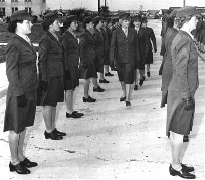

|  |
| Col Katherine A. Towle, second director of the Marine Corps Women's Reserve, inspects WRs wearing winter service green at MCRD, Parris Island, in 1945. Photo courtesy of Sarah Thornton |
Increased manpower requirements forced all of the services to re-evaluate their recruiting strategies. Sheer necessity opened the doors to African-Americans, Native Americans, women and other minority groups during World War II. The Marine Corps was the last service to make changes to recruiting policies. On February 13, 1943, the Marine Corps opened its doors to women for the first time since World War I. By the war's end, there were more than 20,000 women on active duty. The Marine Corps has not seen that many women on active duty since.
Women in each of the other services acquired nicknames with their active duty status. Navy women became WAVES. Army women became WAACS. Debate over a nickname for women in the Marines varied from the Marinettes of World War I to Femarines. General Thomas Holcomb settled the matter with a finality distinctive of the Marines. Initially an ardent opponent of women in the Corps, a quote in the March 27, 1944 issue of
They are Marines. They don't have a nickname and they don't need one. . . They inherit the traditions of Marines. They are Marines.
This page looks at some of the key aspects of integrating women into the Marine Corps in World War II.
.
Separate training existed for officers and enlisted female Marines, similar to the male Marines.
.
.
.
.